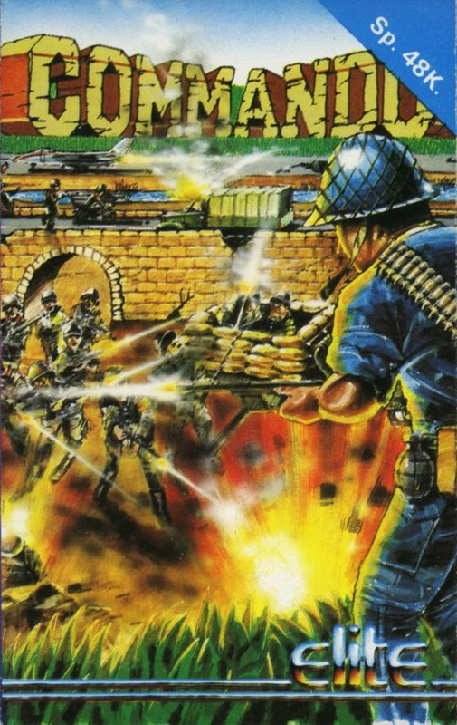
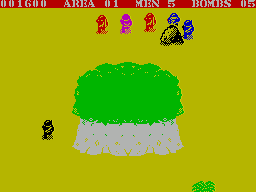

Commando


{kind=link}

| Publisher: | Elite |
| Price: | £7.95 |
| Year: | 1985 |
| Source: | CRASH, Issue 24 |

Elite’s Commando is the licensed version of the classic Capcom arcade game which has captivated thousands and thousands of arcade gamers all over Britain.
The game involves you taking the role of a super crack commando with a mission to penetrate deep behind enemy lines and destroy their two main fortress. This mission takes place over a vertically scrolling landscape and you, armed with a few grenades and a sub machine gun, have to take on the entire enemy army single handed. There are boxes of grenades lying around the battlefield which you can pick up to replenish your stocks, but otherwise you just have to use your skill, reflexes and sub machine gun to survive.

To reach each fortress you first have to go through four areas, each with its own mini fortress at the end. When you take a mini fortress you are transported to the second area, and so on until you reach the main fortress. If you take and destroy that then you’ll start the second mission which has to be completed in similar style, although the landscape and soldiers are far more hostile.
When you approach a fortress its doors open and loads of soldiers pour out, spewing bullets from their guns and lobbing grenades all over the shop. To take the fortress you have to destroy every soldier — not a trivial task. When you’ve killed all the soldiers then your man automatically runs through the fortress gates, a message of congratulations is printed up on screen and you’ll be transported to the next area.
Each area has its own features and hazards. Level one is comparatively easy, but by the time you reach level four the going gets really tough, with lots of obstacles to thwart swift forward progress. Naturally, there are loads of enemy soldiers swarming all over the place, but luckily they’re only armed with single shot rifles and grenades. Even so their sheer number often becomes totally overpowering.
There are two specialist weapons used by enemy soldiers: bazookas and mortars. Mortar bombers don’t pose too much of a threat, since they can only fire one pretty inaccurate shot at a time. Bazooka carriers, on the other hand, are deadly and fire round after round of lethal shells which explode in a large cloud of deadly flak.
Vehicles trundle about the landscape. They come in various shapes and sizes and include trucks, jeeps and motorbikes. They’ve all got to be avoided, but can be destroyed with a well-aimed hand grenade. Jeeps can cause problems, as they carry a gunner armed with a sub machine gun and spell doom if you’re not busy pegging it in the opposite direction. Lorries, too, are deadly and carry many soldiers which pile out when their transport stops.
The landscape is very barren — well, what do you expect for a desert? Dotted around are trees, little hills (usually the enemy come belting down the slopes) and rivers (there are always bridges to cross them — you might be a commando but you can’t swim!).
Area one is pretty deserted with only a few trees and hills, although there is a bridge which you have go under. The bridge is narrow, and there’s usually plenty of enemy soldiers just waiting to pounce on you on the other side. After the bridge there are rocks which the enemy use for cover and after them, the first mini fortress.
Area two is where things start getting tough. Foxholes filled with soldiers block your path, and the only way to kill the soldiers is by lobbing grenades on them. While you’re trying to do that they’re busily trying to machine gun you down, just to make your life a misery. There are also another two bridges, one to go under and one to go over (it gets you across a river). Buildings and bunkers start to make an appearance too. Yet more soldiers pour from the buildings, while a fusillade of bullets comes from the bunkers.
Areas three and four feature all the hazards found in the earlier sections, only in far greater numbers. On area four, the final run up to the first fortress, you are forced to cross an airport which has lookout towers complete with machine gun wielding soldiers at the top. The areas which lead to the second fortress are diabolical, by comparison with what goes before them. And if you manage to destroy the second fortress then you’ll be transported back to the very first area, to start over, but the enemy are more numerous and they fire more accurately.
Points are awarded for disposing of enemy soldiers and vehicles and a hefty bonus can be earned by killing two guards who hold a colleague of yours prisoner. Once you liberate your ally, he disappears, rather than helping you fight your battle, however.
CRITICISM
‘Speaking as someone whose youth was spent toggling the joysticks of arcade games this is about the best arcade conversion your Spectrum is likely to see. The arcade machine had some of the most photographic graphics and brilliant stereo sound — naturally these have been lost in the transition from megabyte memory 68000 to 48K Z80. Nevertheless, the rest of the game has faithfully been incorporated — all eight areas have been copied with meticulous attention. All the hillocks, trees, bridges and everything are all there — the soldiers even attack from the same points! The highscore table is the same as the arcade one too, with its spinning letters and all that. The gameplay is brilliant, although playing with the keys is a bit of a pain — it all gets rather confusing at the end of an area. If you want a game for Christmas then look no further than this, it’s ********* amazing!’
‘Elite have done a brilliant job, converting this arcade game for the Spectrum. The action is fast and furious, and should present a lasting challenge to anyone addicted to shoot em ups. Plenty of practice will be needed to get far into the game — it’s very easy to concentrate on wiping out the enemy but you’ve got to remember to dodge their bullets too! Horribly violent, and not much of an intellectual challenge — but great fun. Get it.’
‘I must confess that I never expected this game to turn out quite as well as it did. I found the game very easy to get into and not so easy to leave alone. The movement of the characters is very effective, I particularly enjoyed the way the enemy troops jumped down from various heights and then set about trying to do you in. There are some graphics which might have been better left out — in particular to the jeep which looks more like a tape deck. All in all Commando is a great game for those into fast moving violence, it requires fine tuned reactions and a fair bit of daring.’
COMMENTS
| Control keys: | Redefinable |
| Joystick: | Kempston, Sinclair, Cursor, Fuller |
| Keyboard play: | Very responsive |
| Use of colour: | Rather bland |
| Graphics: | Excellent scrolling, and fast, especially with the amount of little mateys hacking about |
| Sound: | Great spot effects, but no tune |
| Skill levels: | Increasing difficulty |
| Screens: | Eight areas to fight through |
| General rating: | A first-rate arcade conversion — very addictive indeed |
| Use of computer: | 86% |
| Graphics: | 92% |
| Playability: | 95% |
| Getting started: | 94% |
| Addictive qualities: | 95% |
| Value for money: | 92% |
| Overall: | 94% |